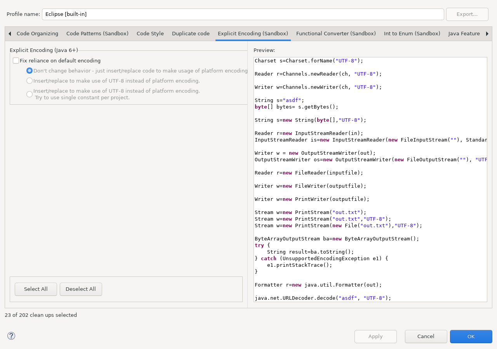

Replaces platform-default or string-based charset usage with explicit, type-safe charset handling.
This documentation is installed by sandbox_encoding_quickfix_feature
together with the runtime plug-in. The runtime plug-in does not depend on this Help bundle.
StandardCharsets.UTF_8 for supported platform-default APIs.StandardCharsets.UTF_8.Open Java > Code Style > Clean Up, edit a cleanup profile, and select Explicit Encoding (Sandbox).

Continue with Using this feature and Reference, safety, and limitations.